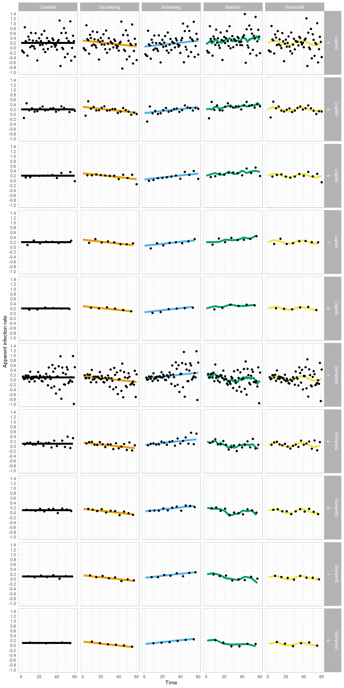
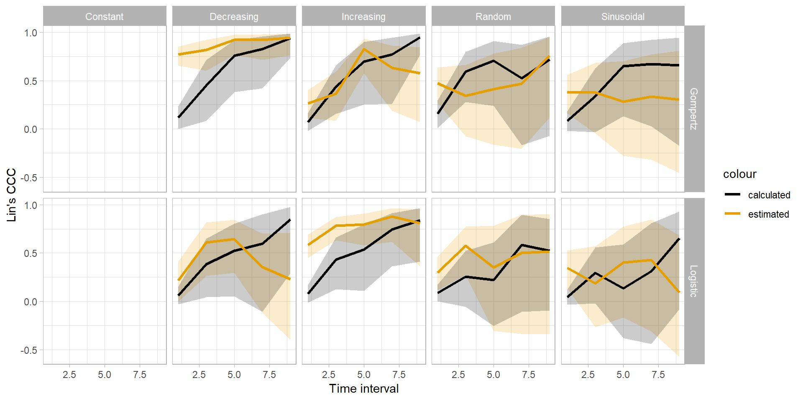
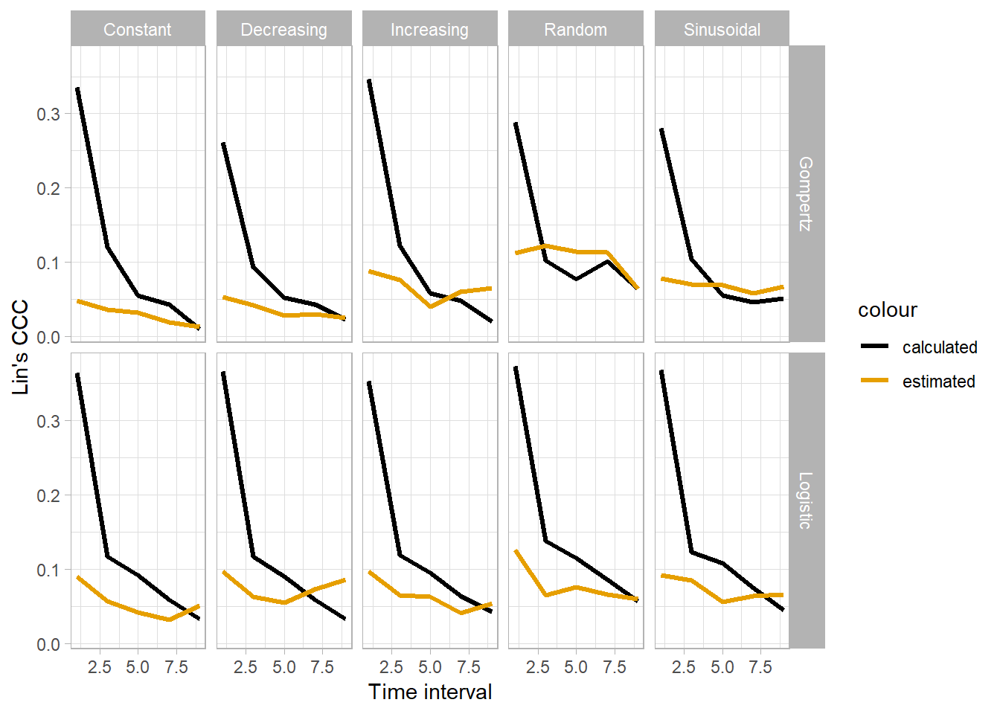

Document analysis
Packages
library(tidyverse)
library(ggthemes)
library(readxl)
library(cowplot)
library(viridis)
library(agricolae)
library(DescTools)
library(deSolve)ggplot2 standard theme
theme_set(theme_light())functions
The fuction for simulation of the measures and particle filter are called here.
source("logistic.R")
source("gompertz.R")
source("particle_filter2.R")Estimation for logistic model
Here we set the initial values for simulation of each type of infection rate behavior.
logi_setup = matrix(
c("Constant", 0.2,
"Increasing", 0.05,
"Decreasing", 0.5,
"Sinusoidal", 0.2,
"Random", 0.2),
nrow=5,ncol=,byrow = TRUE) Run the particle filter for each type of infection rate and for each time interval
logistic_all2 = data.frame()
for(k in seq(1,10, by = 2)){
logistic_all = data.frame()
for( i in 1:5){
set.seed(1)
data = logistic(N= 60, dt=0.5, y0=0.001, r=as.numeric(logi_setup[i,2]), sd = 0.1, inf = i)
data = data %>%
filter(time %in% c(seq(0,60, by = k)))
data_logi = data.frame(infection_type = as.factor(logi_setup[i,1]),
SIR_filter(model = 1,
guess_r = as.numeric(logi_setup[i,2]),
Nparti=1000,
measures = data$Randon_intensity,
time = data$time,
sd_meas = 0.2,
sd_par = 0.20,
sd_model = 0.05),
y = data$Randon_intensity,
inf_rate = data$inf_rate)
logistic_all = logistic_all %>%
bind_rows(data_logi)
}
logistic_all = logistic_all %>%
mutate(time_interval = k)
logistic_all2 = logistic_all2 %>%
bind_rows(logistic_all)
} plot_grid(
logistic_all2 %>%
ggplot()+
geom_ribbon(aes(time, ymin = (ubdsiro), ymax = (lbdsiro), fill = "Ic 99%"), alpha = 0.5, stat = "identity") +
geom_line(aes(time,inf_rate, color = infection_type),
size = 2)+
geom_point(aes(time,sinti),
size = 2,
alpha = 0.3)+
facet_grid(time_interval~infection_type)+
scale_fill_manual(values = "gray")+
scale_color_colorblind()+
labs(x = "Time",
y = "Apparent infection rate")+
theme(legend.position = "none")+
scale_y_continuous(breaks = seq(-2,2, 0.2)),
logistic_all2 %>%
ggplot()+
geom_ribbon(aes(time, ymin = (ubdsir), ymax = (lbdsir), fill = "Ic 99%"), alpha = 0.5, stat = "identity") +
geom_line(aes(time,y, color = infection_type),
size = 2)+
geom_point(aes(time,xestsir),
size = 2,
alpha = 0.3)+
facet_grid(time_interval~infection_type)+
scale_fill_manual(values = "gray")+
scale_color_colorblind()+
labs(x = "Time",
y = "Intensity")+
theme(legend.position = "none")+
scale_y_continuous(breaks = seq(0,1, 0.2)),
nrow = 2
)
# ggsave("figs/logistic.png", dpi=300, height = 6, width = 10)Acuracy
a = logistic_all2 %>%
group_by(infection_type,time_interval) %>%
mutate(rmsi = (inf_rate - sinti)^2) %>%
summarise(RMS = sqrt((1/(length(inf_rate)))*sum(rmsi, na.rm = T)),
CCC = CCC(inf_rate ,sinti)$rho.c$est,
lwr.ci = CCC(inf_rate ,sinti)$rho.c$lwr.ci,
upr.ci = CCC(inf_rate ,sinti)$rho.c$upr.ci) %>%
mutate(model = "Logistic")
b = logistic_all2 %>%
group_by(infection_type,time_interval) %>%
filter(y < 0.99) %>%
mutate(rmsi = (inf_rate - sinti)^2) %>%
summarise(RMS.1 = sqrt((1/(length(inf_rate)))*sum(rmsi, na.rm = T)),
CCC.1 = CCC(inf_rate ,sinti)$rho.c$est,
lwr.ci.1 = CCC(inf_rate ,sinti)$rho.c$lwr.ci,
upr.ci.1 = CCC(inf_rate ,sinti)$rho.c$upr.ci) %>%
mutate(model = "Logistic")
acuracy_logi = left_join(a, b)## Joining, by = c("infection_type", "time_interval", "model")Estimation for Gompertz model
gompi_setup = matrix(
c("Constant", 0.1,
"Increasing", 0.05,
"Decreasing", 0.15,
"Sinusoidal", 0.05,
"Random", 0.2),
nrow=5,ncol=,byrow = TRUE) gompertz_all2 = data.frame()
for(k in seq(1,10, by = 2)){
gompertz_all = data.frame()
for(i in 1:5){
set.seed(3)
data = gompertz(N= 60, dt=0.5, y0=0.001,r=as.numeric(gompi_setup[i,2]), sd = 0.1, inf = i)
data = data %>%
filter(time %in% c(seq(1,60, by = k)))
# data$time = data$time[seq(1,length(data$time), by =8)]
data_gompi = data.frame(infection_type = as.factor(gompi_setup[i,1]),
SIR_filter(model = 2,
guess_r = as.numeric(gompi_setup[i,2]),
Nparti=1000,
measures = data$Randon_intensity,
time = data$time,
sd_meas = 0.2,
sd_par = 0.15,
sd_model = 0.05),
y = data$Randon_intensity,
inf_rate = data$inf_rate)
gompertz_all = gompertz_all %>%
bind_rows(data_gompi)
}
gompertz_all = gompertz_all %>%
mutate(time_interval = k)
gompertz_all2 = gompertz_all2 %>%
bind_rows(gompertz_all)
} plot_grid(
gompertz_all2 %>%
ggplot()+
geom_ribbon(aes(time, ymin = (ubdsiro), ymax = (lbdsiro), fill = "Ic 99%"), alpha = 0.5, stat = "identity") +
geom_line(aes(time,inf_rate, color = infection_type),
size = 2)+
geom_point(aes(time,sinti),
size = 2,
alpha = 0.3)+
facet_grid(time_interval~infection_type)+
scale_fill_manual(values = "gray")+
scale_color_colorblind()+
labs(x = "Time",
y = "Apparent infection rate")+
theme(legend.position = "none")+
scale_y_continuous(breaks = seq(-2,2, 0.2)),
gompertz_all2 %>%
ggplot()+
geom_ribbon(aes(time, ymin = (ubdsir), ymax = (lbdsir), fill = "Ic 99%"), alpha = 0.5, stat = "identity") +
geom_line(aes(time,y, color = infection_type),
size = 2)+
geom_point(aes(time,xestsir),
size = 2,
alpha = 0.3)+
facet_grid(time_interval~infection_type)+
scale_fill_manual(values = "gray")+
scale_color_colorblind()+
labs(x = "Time",
y = "Intensity")+
theme(legend.position = "none")+
scale_y_continuous(breaks = seq(-2,2, 0.2)),
nrow = 2
)
# ggsave("figs/gompertz.png", dpi=300, height = 6, width = 10)Acuracy
c = gompertz_all2 %>%
group_by(infection_type,time_interval) %>%
mutate(rmsi = (inf_rate - sinti)^2) %>%
summarise(RMS = sqrt((1/(length(inf_rate)))*sum(rmsi, na.rm = T)),
CCC = CCC(inf_rate ,sinti)$rho.c$est,
lwr.ci = CCC(inf_rate ,sinti)$rho.c$lwr.ci,
upr.ci = CCC(inf_rate ,sinti)$rho.c$upr.ci) %>%
mutate(model = "Gompertz")
d = gompertz_all2 %>%
group_by(infection_type,time_interval) %>%
filter(y < 0.99) %>%
mutate(rmsi = (inf_rate - sinti)^2) %>%
summarise(RMS.1 = sqrt((1/(length(inf_rate)))*sum(rmsi, na.rm = T)),
CCC.1 = CCC(inf_rate ,sinti)$rho.c$est,
lwr.ci.1 = CCC(inf_rate ,sinti)$rho.c$lwr.ci,
upr.ci.1 = CCC(inf_rate ,sinti)$rho.c$upr.ci) %>%
mutate(model = "Gompertz")
acuracy_gompi = left_join(c, d)## Joining, by = c("infection_type", "time_interval", "model")Actual epidemics
Load the data
real = read_xlsx("curves_madden_book.xlsx")Run the Particle filter
actual_all = data.frame()
real_matrix = as.matrix(real)
colnames(real_matrix) = NULL
for(i in 1:3){
data_actual = data.frame(curve = as.factor(i),
SIR_filter(model = 1,
guess_r = 0.1,
Nparti=100,
measures = real_matrix[,i+1],
time = real$time,
sd_meas = 0.1,
sd_par = 0.7,
sd_model = 0.1,
dt= 7),
y = real_matrix[,i+1])
actual_all = actual_all %>%
bind_rows(data_actual)
}## Warning in bind_rows_(x, .id): Unequal factor levels: coercing to character## Warning in bind_rows_(x, .id): binding character and factor vector,
## coercing into character vector
## Warning in bind_rows_(x, .id): binding character and factor vector,
## coercing into character vector
## Warning in bind_rows_(x, .id): binding character and factor vector,
## coercing into character vectorVisualization
plot_grid( actual_all %>%
ggplot()+
geom_ribbon(aes(time, ymin = (ubdsir), ymax = (lbdsir), fill = "Ic 99%"), alpha = 0.5, stat = "identity") +
geom_line(aes(time,y, color = curve),
size = 2)+
geom_point(aes(time,xestsir),
size = 2,
alpha = 0.3)+
facet_wrap(~curve, nrow = 1)+
scale_fill_manual(values = "gray")+
scale_color_colorblind()+
labs(x = "Time",
y = "Incidence")+
theme(legend.position = "none"),
actual_all %>%
ggplot()+
geom_ribbon(aes(time, ymin = (ubdsiro), ymax = (lbdsiro), fill = "Ic 99%"), alpha = 0.5, stat = "identity") +
geom_line(aes(time,sinti, color = curve),
size = 2)+
facet_wrap(~curve, nrow = 1)+
scale_fill_manual(values = "gray")+
scale_color_colorblind()+
labs(x = "Time",
y = "Apparent infection rate")+
theme(legend.position = "none"),
nrow = 2)
# ggsave("figs/actual.png", dpi=300, height = 4, width = 6)Using Madden et al. Method to Calc the Apparent infection rate
Simulated epidemics
calc_r_log = logistic_all2 %>%
group_by(infection_type,time_interval) %>%
mutate(r_calc = (log(y/(1-y)) - log((lag(y,1)/(1-(lag(y,1))))))/(time - lag(time,1))) %>%
mutate(model = "Logistic")
calc_r_gomp =gompertz_all2 %>%
group_by(infection_type,time_interval) %>%
mutate(r_calc = (-log(-log(y))--log(-log(lag(y,1))))/(time - lag(time,1))) %>%
mutate(model = "Gompertz")
calculated_r = bind_rows(calc_r_log,calc_r_gomp)
calculated_r$model = factor(calculated_r$model, levels=c("Logistic","Gompertz"), labels=c("Logistic","Gompertz")) calculated_r %>%
ggplot()+
geom_line(aes(time,inf_rate, color = infection_type),
size = 2)+
# geom_point(aes(time,sinti),
# size = 2,
# alpha = 0.4,
# shape = 21)+
geom_point(aes(time,r_calc),
size = 2,
alpha = 1)+
facet_grid(model+time_interval~infection_type)+
scale_fill_viridis()+
scale_color_colorblind()+
labs(x = "Time",
y = "Apparent infection rate")+
guides(color= guide_legend("none"))+
scale_y_continuous(breaks = seq(-3,3, 0.2))+
xlim(0,60)## Warning: Removed 50 rows containing missing values (geom_point).
# ggsave("figs/simulated_r_calc.png", dpi=300, height = 4, width = 6)Acuracy
acuracy_calc = calculated_r%>%
filter(r_calc != is.na(r_calc)) %>%
group_by(model,infection_type, time_interval) %>%
mutate(rmsi = (inf_rate - r_calc)^2) %>%
summarise(RMS = sqrt((1/(length(inf_rate)))*sum(rmsi, na.rm = T)),
CCC = CCC(inf_rate ,r_calc)$rho.c$est,
lwr.ci = CCC(inf_rate ,r_calc)$rho.c$lwr.ci,
upr.ci = CCC(inf_rate ,r_calc)$rho.c$upr.ci
)acuracy_est =bind_rows(acuracy_logi,acuracy_gompi) ggplot()+
geom_ribbon(data =acuracy_est, aes(time_interval,
ymin = lwr.ci.1,
ymax = upr.ci.1,
fill = "Estimated r"),
alpha = 0.2 )+
geom_ribbon(data =acuracy_calc, aes(time_interval,
ymin = lwr.ci,
ymax = upr.ci,
fill = "Caculated r"),
alpha = 0.2 )+
geom_line(data =acuracy_calc, aes(time_interval, CCC, color = "calculated"),
size = 1.2)+
geom_line(data =acuracy_est, aes(time_interval, CCC.1, color = "estimated"),
size = 1.2)+
scale_color_colorblind()+
scale_fill_colorblind()+
guides(fill= guide_legend("none"))+
facet_grid(model~infection_type)+
labs(x = "Time interval", y = "Lin's CCC")## Warning: Removed 5 rows containing missing values (geom_path).
## Warning: Removed 5 rows containing missing values (geom_path).
Actual epidemics
plot_grid( actual_all %>%
ggplot()+
geom_ribbon(aes(time, ymin = (ubdsir), ymax = (lbdsir), fill = "Ic 99%"), alpha = 0.5, stat = "identity") +
geom_line(aes(time,y, color = curve),
size = 2)+
geom_point(aes(time,xestsir),
size = 2,
alpha = 0.3)+
facet_wrap(~curve, nrow = 1)+
scale_fill_manual(values = "gray")+
scale_color_colorblind()+
labs(x = "Time",
y = "Incidence")+
theme(legend.position = "none"),
actual_all%>%
group_by(curve) %>%
mutate(r_calc = (log(y/(1-y)) - log((lag(y,1)/(1-(lag(y,1))))))/(time - lag(time,1))) %>%
ggplot()+
geom_ribbon(aes(time, ymin = (ubdsiro), ymax = (lbdsiro), fill = "Ic 99%"), alpha = 0.5, stat = "identity") +
geom_line(aes(time,sinti, color = curve),
size = 2
)+
geom_point(aes(time,r_calc),
size = 2,
allpha = 0.5)+
facet_wrap(~curve, nrow = 1)+
scale_fill_manual(values = "gray")+
scale_color_colorblind()+
labs(x = "Time",
y = "Apparent infection rate")+
theme(legend.position = "none")+
scale_y_continuous(breaks = seq(-2,2, 0.2)) ,
nrow = 2,
labels = c("A","B")
)## Warning: Ignoring unknown parameters: allpha## Warning: Removed 3 rows containing missing values (geom_point).
# ggsave("figs/Actual_plots.png", dpi=300, height = 5, width = 6)JSBEb2N1bWVudCBhbmFseXNpcw0KDQojIFBhY2thZ2VzDQoNCmBgYHtyIG1lc3NhZ2U9RkFMU0UsIHdhcm5pbmc9RkFMU0V9DQpsaWJyYXJ5KHRpZHl2ZXJzZSkNCmxpYnJhcnkoZ2d0aGVtZXMpDQpsaWJyYXJ5KHJlYWR4bCkNCmxpYnJhcnkoY293cGxvdCkNCmxpYnJhcnkodmlyaWRpcykNCmxpYnJhcnkoYWdyaWNvbGFlKQ0KbGlicmFyeShEZXNjVG9vbHMpDQpsaWJyYXJ5KGRlU29sdmUpDQpgYGANCg0KIyBgZ2dwbG90MmAgc3RhbmRhcmQgdGhlbWUNCg0KYGBge3J9DQp0aGVtZV9zZXQodGhlbWVfbGlnaHQoKSkNCmBgYA0KDQojIGZ1bmN0aW9ucw0KDQpUaGUgZnVjdGlvbiBmb3Igc2ltdWxhdGlvbiBvZiB0aGUgbWVhc3VyZXMgIGFuZCBwYXJ0aWNsZSBmaWx0ZXIgYXJlIGNhbGxlZCBoZXJlLiANCmBgYHtyfQ0Kc291cmNlKCJsb2dpc3RpYy5SIikNCnNvdXJjZSgiZ29tcGVydHouUiIpDQpzb3VyY2UoInBhcnRpY2xlX2ZpbHRlcjIuUiIpDQpgYGANCg0KIyBFc3RpbWF0aW9uIGZvciBsb2dpc3RpYyBtb2RlbA0KDQpIZXJlIHdlIHNldCB0aGUgaW5pdGlhbCB2YWx1ZXMgZm9yIHNpbXVsYXRpb24gb2YgZWFjaCB0eXBlIG9mIGluZmVjdGlvbiByYXRlIGJlaGF2aW9yLg0KDQpgYGB7cn0NCmxvZ2lfc2V0dXAgPSBtYXRyaXgoDQogIGMoIkNvbnN0YW50IiwgMC4yLA0KICAiSW5jcmVhc2luZyIsIDAuMDUsDQogICJEZWNyZWFzaW5nIiwgMC41LA0KICAiU2ludXNvaWRhbCIsIDAuMiwNCiAgIlJhbmRvbSIsIDAuMiksDQogIG5yb3c9NSxuY29sPSxieXJvdyA9IFRSVUUpIA0KDQpgYGANCg0KUnVuIHRoZSBwYXJ0aWNsZSBmaWx0ZXIgZm9yIGVhY2ggdHlwZSBvZiBpbmZlY3Rpb24gcmF0ZSBhbmQgZm9yIGVhY2ggdGltZSBpbnRlcnZhbA0KDQpgYGB7ciB3YXJuaW5nPUZBTFNFfQ0KbG9naXN0aWNfYWxsMiA9IGRhdGEuZnJhbWUoKQ0KZm9yKGsgaW4gc2VxKDEsMTAsIGJ5ID0gMikpew0KDQpsb2dpc3RpY19hbGwgPSBkYXRhLmZyYW1lKCkNCmZvciggaSBpbiAxOjUpew0KICBzZXQuc2VlZCgxKQ0KZGF0YSA9IGxvZ2lzdGljKE49IDYwLCBkdD0wLjUsIHkwPTAuMDAxLCByPWFzLm51bWVyaWMobG9naV9zZXR1cFtpLDJdKSwgc2QgPSAwLjEsIGluZiA9IGkpDQpkYXRhID0gZGF0YSAlPiUgDQogIGZpbHRlcih0aW1lICVpbiUgYyhzZXEoMCw2MCwgYnkgPSBrKSkpDQpkYXRhX2xvZ2kgPSBkYXRhLmZyYW1lKGluZmVjdGlvbl90eXBlID0gYXMuZmFjdG9yKGxvZ2lfc2V0dXBbaSwxXSksDQogICAgICAgICAgICAgICAgICAgU0lSX2ZpbHRlcihtb2RlbCA9IDEsDQogICAgICAgICAgICAgICAgICAgZ3Vlc3NfciA9IGFzLm51bWVyaWMobG9naV9zZXR1cFtpLDJdKSwNCiAgICAgICAgICAgICAgICAgICBOcGFydGk9MTAwMCwNCiAgICAgICAgICAgICAgICAgICBtZWFzdXJlcyA9IGRhdGEkUmFuZG9uX2ludGVuc2l0eSwNCiAgICAgICAgICAgICAgICAgICB0aW1lID0gZGF0YSR0aW1lLA0KICAgICAgICAgICAgICAgICAgIHNkX21lYXMgPSAwLjIsDQogICAgICAgICAgICAgICAgICAgc2RfcGFyID0gMC4yMCwNCiAgICAgICAgICAgICAgICAgICBzZF9tb2RlbCA9IDAuMDUpLA0KICAgICAgICAgICAgICAgICAgIHkgPSBkYXRhJFJhbmRvbl9pbnRlbnNpdHksDQogICAgICAgICAgICAgICAgICAgaW5mX3JhdGUgPSBkYXRhJGluZl9yYXRlKSAgDQoNCmxvZ2lzdGljX2FsbCA9IGxvZ2lzdGljX2FsbCAlPiUgDQogIGJpbmRfcm93cyhkYXRhX2xvZ2kpDQp9DQoNCmxvZ2lzdGljX2FsbCA9IGxvZ2lzdGljX2FsbCAlPiUgDQogIG11dGF0ZSh0aW1lX2ludGVydmFsID0gaykNCiAgDQpsb2dpc3RpY19hbGwyID0gbG9naXN0aWNfYWxsMiAlPiUgDQogIGJpbmRfcm93cyhsb2dpc3RpY19hbGwpIA0KfSAgDQoNCmBgYA0KDQpgYGB7ciBmaWcuaGVpZ2h0PTIwLCBmaWcud2lkdGg9MTB9DQpwbG90X2dyaWQoDQpsb2dpc3RpY19hbGwyICU+JSANCiAgZ2dwbG90KCkrDQogIGdlb21fcmliYm9uKGFlcyh0aW1lLCB5bWluID0gKHViZHNpcm8pLCB5bWF4ID0gKGxiZHNpcm8pLCBmaWxsID0gIkljIDk5JSIpLCBhbHBoYSA9IDAuNSwgc3RhdCA9ICJpZGVudGl0eSIpICsNCiAgZ2VvbV9saW5lKGFlcyh0aW1lLGluZl9yYXRlLCBjb2xvciA9IGluZmVjdGlvbl90eXBlKSwNCiAgICAgICAgICAgIHNpemUgPSAyKSsNCiAgZ2VvbV9wb2ludChhZXModGltZSxzaW50aSksDQogICAgICAgICAgICAgc2l6ZSA9IDIsIA0KICAgICAgICAgICAgIGFscGhhID0gMC4zKSsNCiAgZmFjZXRfZ3JpZCh0aW1lX2ludGVydmFsfmluZmVjdGlvbl90eXBlKSsNCiAgc2NhbGVfZmlsbF9tYW51YWwodmFsdWVzID0gImdyYXkiKSsNCiAgc2NhbGVfY29sb3JfY29sb3JibGluZCgpKw0KICBsYWJzKHggPSAiVGltZSIsDQogICAgICAgeSA9ICJBcHBhcmVudCBpbmZlY3Rpb24gcmF0ZSIpKw0KICB0aGVtZShsZWdlbmQucG9zaXRpb24gPSAibm9uZSIpKw0KICBzY2FsZV95X2NvbnRpbnVvdXMoYnJlYWtzID0gc2VxKC0yLDIsIDAuMikpLA0KDQpsb2dpc3RpY19hbGwyICU+JSANCiAgZ2dwbG90KCkrDQogIGdlb21fcmliYm9uKGFlcyh0aW1lLCB5bWluID0gKHViZHNpciksIHltYXggPSAobGJkc2lyKSwgZmlsbCA9ICJJYyA5OSUiKSwgYWxwaGEgPSAwLjUsIHN0YXQgPSAiaWRlbnRpdHkiKSArDQogIGdlb21fbGluZShhZXModGltZSx5LCBjb2xvciA9IGluZmVjdGlvbl90eXBlKSwNCiAgICAgICAgICAgIHNpemUgPSAyKSsNCiAgZ2VvbV9wb2ludChhZXModGltZSx4ZXN0c2lyKSwNCiAgICAgICAgICAgICBzaXplID0gMiwgDQogICAgICAgICAgICAgYWxwaGEgPSAwLjMpKw0KICBmYWNldF9ncmlkKHRpbWVfaW50ZXJ2YWx+aW5mZWN0aW9uX3R5cGUpKw0KICBzY2FsZV9maWxsX21hbnVhbCh2YWx1ZXMgPSAiZ3JheSIpKw0KICBzY2FsZV9jb2xvcl9jb2xvcmJsaW5kKCkrDQogIGxhYnMoeCA9ICJUaW1lIiwNCiAgICAgICB5ID0gIkludGVuc2l0eSIpKw0KICB0aGVtZShsZWdlbmQucG9zaXRpb24gPSAibm9uZSIpKw0KICBzY2FsZV95X2NvbnRpbnVvdXMoYnJlYWtzID0gc2VxKDAsMSwgMC4yKSksDQpucm93ID0gMg0KKQ0KICMgZ2dzYXZlKCJmaWdzL2xvZ2lzdGljLnBuZyIsIGRwaT0zMDAsIGhlaWdodCA9IDYsIHdpZHRoID0gMTApDQpgYGANCg0KIyMgQWN1cmFjeQ0KDQpgYGB7ciB3YXJuaW5nPUZBTFNFfQ0KYSA9IGxvZ2lzdGljX2FsbDIgJT4lIA0KICBncm91cF9ieShpbmZlY3Rpb25fdHlwZSx0aW1lX2ludGVydmFsKSAlPiUNCiAgbXV0YXRlKHJtc2kgPSAoaW5mX3JhdGUgLSBzaW50aSleMikgJT4lIA0KICBzdW1tYXJpc2UoUk1TID0gc3FydCgoMS8obGVuZ3RoKGluZl9yYXRlKSkpKnN1bShybXNpLCBuYS5ybSA9IFQpKSwNCiAgICAgICAgICAgIENDQyA9IENDQyhpbmZfcmF0ZSAsc2ludGkpJHJoby5jJGVzdCwNCiAgICAgICAgICAgIGx3ci5jaSA9IENDQyhpbmZfcmF0ZSAsc2ludGkpJHJoby5jJGx3ci5jaSwNCiAgICAgICAgICAgIHVwci5jaSA9IENDQyhpbmZfcmF0ZSAsc2ludGkpJHJoby5jJHVwci5jaSkgJT4lIA0KICBtdXRhdGUobW9kZWwgPSAiTG9naXN0aWMiKQ0KDQpiID0gbG9naXN0aWNfYWxsMiAlPiUgDQogIGdyb3VwX2J5KGluZmVjdGlvbl90eXBlLHRpbWVfaW50ZXJ2YWwpICU+JQ0KICBmaWx0ZXIoeSA8IDAuOTkpICU+JSANCiAgbXV0YXRlKHJtc2kgPSAoaW5mX3JhdGUgLSBzaW50aSleMikgJT4lIA0KICBzdW1tYXJpc2UoUk1TLjEgPSBzcXJ0KCgxLyhsZW5ndGgoaW5mX3JhdGUpKSkqc3VtKHJtc2ksIG5hLnJtID0gVCkpLA0KICAgICAgICAgICAgQ0NDLjEgPSBDQ0MoaW5mX3JhdGUgLHNpbnRpKSRyaG8uYyRlc3QsDQogICAgICAgICAgICBsd3IuY2kuMSA9IENDQyhpbmZfcmF0ZSAsc2ludGkpJHJoby5jJGx3ci5jaSwNCiAgICAgICAgICAgIHVwci5jaS4xID0gQ0NDKGluZl9yYXRlICxzaW50aSkkcmhvLmMkdXByLmNpKSAlPiUgDQogIG11dGF0ZShtb2RlbCA9ICJMb2dpc3RpYyIpDQphY3VyYWN5X2xvZ2kgPSBsZWZ0X2pvaW4oYSwgYikNCg0KDQpgYGANCg0KDQojIEVzdGltYXRpb24gZm9yIEdvbXBlcnR6IG1vZGVsDQoNCmBgYHtyfQ0KZ29tcGlfc2V0dXAgPSBtYXRyaXgoDQogIGMoIkNvbnN0YW50IiwgMC4xLA0KICAiSW5jcmVhc2luZyIsIDAuMDUsDQogICJEZWNyZWFzaW5nIiwgMC4xNSwNCiAgIlNpbnVzb2lkYWwiLCAwLjA1LA0KICAiUmFuZG9tIiwgMC4yKSwNCiAgbnJvdz01LG5jb2w9LGJ5cm93ID0gVFJVRSkgDQoNCmBgYA0KDQoNCmBgYHtyIHdhcm5pbmc9RkFMU0V9DQpnb21wZXJ0el9hbGwyID0gZGF0YS5mcmFtZSgpDQpmb3IoayBpbiBzZXEoMSwxMCwgYnkgPSAyKSl7DQogIA0KZ29tcGVydHpfYWxsID0gZGF0YS5mcmFtZSgpDQpmb3IoaSBpbiAxOjUpew0Kc2V0LnNlZWQoMykNCmRhdGEgPSBnb21wZXJ0eihOPSA2MCwgZHQ9MC41LCB5MD0wLjAwMSxyPWFzLm51bWVyaWMoZ29tcGlfc2V0dXBbaSwyXSksIHNkID0gMC4xLCBpbmYgPSBpKQ0KZGF0YSA9IGRhdGEgJT4lIA0KICBmaWx0ZXIodGltZSAlaW4lIGMoc2VxKDEsNjAsIGJ5ID0gaykpKQ0KIyBkYXRhJHRpbWUgPSBkYXRhJHRpbWVbc2VxKDEsbGVuZ3RoKGRhdGEkdGltZSksIGJ5ID04KV0NCg0KZGF0YV9nb21waSA9IGRhdGEuZnJhbWUoaW5mZWN0aW9uX3R5cGUgPSBhcy5mYWN0b3IoZ29tcGlfc2V0dXBbaSwxXSksDQogICAgICAgICAgICAgICAgICAgU0lSX2ZpbHRlcihtb2RlbCA9IDIsDQogICAgICAgICAgICAgICAgICAgZ3Vlc3NfciA9IGFzLm51bWVyaWMoZ29tcGlfc2V0dXBbaSwyXSksDQogICAgICAgICAgICAgICAgICAgTnBhcnRpPTEwMDAsDQogICAgICAgICAgICAgICAgICAgbWVhc3VyZXMgPSBkYXRhJFJhbmRvbl9pbnRlbnNpdHksDQogICAgICAgICAgICAgICAgICAgdGltZSA9IGRhdGEkdGltZSwNCiAgICAgICAgICAgICAgICAgICBzZF9tZWFzID0gMC4yLA0KICAgICAgICAgICAgICAgICAgIHNkX3BhciA9IDAuMTUsDQogICAgICAgICAgICAgICAgICAgc2RfbW9kZWwgPSAwLjA1KSwNCiAgICAgICAgICAgICAgICAgICB5ID0gZGF0YSRSYW5kb25faW50ZW5zaXR5LA0KICAgICAgICAgICAgICAgICAgIGluZl9yYXRlID0gZGF0YSRpbmZfcmF0ZSkgIA0KDQpnb21wZXJ0el9hbGwgPSBnb21wZXJ0el9hbGwgJT4lIA0KICBiaW5kX3Jvd3MoZGF0YV9nb21waSkNCg0KfSANCg0KZ29tcGVydHpfYWxsID0gZ29tcGVydHpfYWxsICU+JSANCiAgbXV0YXRlKHRpbWVfaW50ZXJ2YWwgPSBrKQ0KICANCmdvbXBlcnR6X2FsbDIgPSBnb21wZXJ0el9hbGwyICU+JSANCiAgYmluZF9yb3dzKGdvbXBlcnR6X2FsbCkgDQp9ICANCmBgYA0KDQpgYGB7ciBmaWcuaGVpZ2h0PTIwLCBmaWcud2lkdGg9MTB9DQpwbG90X2dyaWQoDQpnb21wZXJ0el9hbGwyICU+JSANCiAgZ2dwbG90KCkrDQogIGdlb21fcmliYm9uKGFlcyh0aW1lLCB5bWluID0gKHViZHNpcm8pLCB5bWF4ID0gKGxiZHNpcm8pLCBmaWxsID0gIkljIDk5JSIpLCBhbHBoYSA9IDAuNSwgc3RhdCA9ICJpZGVudGl0eSIpICsNCiAgZ2VvbV9saW5lKGFlcyh0aW1lLGluZl9yYXRlLCBjb2xvciA9IGluZmVjdGlvbl90eXBlKSwNCiAgICAgICAgICAgIHNpemUgPSAyKSsNCiAgZ2VvbV9wb2ludChhZXModGltZSxzaW50aSksDQogICAgICAgICAgICAgc2l6ZSA9IDIsIA0KICAgICAgICAgICAgIGFscGhhID0gMC4zKSsNCiAgZmFjZXRfZ3JpZCh0aW1lX2ludGVydmFsfmluZmVjdGlvbl90eXBlKSsNCiAgc2NhbGVfZmlsbF9tYW51YWwodmFsdWVzID0gImdyYXkiKSsNCiAgc2NhbGVfY29sb3JfY29sb3JibGluZCgpKw0KICBsYWJzKHggPSAiVGltZSIsDQogICAgICAgeSA9ICJBcHBhcmVudCBpbmZlY3Rpb24gcmF0ZSIpKw0KICB0aGVtZShsZWdlbmQucG9zaXRpb24gPSAibm9uZSIpKw0KICBzY2FsZV95X2NvbnRpbnVvdXMoYnJlYWtzID0gc2VxKC0yLDIsIDAuMikpLA0KDQpnb21wZXJ0el9hbGwyICU+JSANCiAgZ2dwbG90KCkrDQogIGdlb21fcmliYm9uKGFlcyh0aW1lLCB5bWluID0gKHViZHNpciksIHltYXggPSAobGJkc2lyKSwgZmlsbCA9ICJJYyA5OSUiKSwgYWxwaGEgPSAwLjUsIHN0YXQgPSAiaWRlbnRpdHkiKSArDQogIGdlb21fbGluZShhZXModGltZSx5LCBjb2xvciA9IGluZmVjdGlvbl90eXBlKSwNCiAgICAgICAgICAgIHNpemUgPSAyKSsNCiAgZ2VvbV9wb2ludChhZXModGltZSx4ZXN0c2lyKSwNCiAgICAgICAgICAgICBzaXplID0gMiwgDQogICAgICAgICAgICAgYWxwaGEgPSAwLjMpKw0KICBmYWNldF9ncmlkKHRpbWVfaW50ZXJ2YWx+aW5mZWN0aW9uX3R5cGUpKw0KICBzY2FsZV9maWxsX21hbnVhbCh2YWx1ZXMgPSAiZ3JheSIpKw0KICBzY2FsZV9jb2xvcl9jb2xvcmJsaW5kKCkrDQogIGxhYnMoeCA9ICJUaW1lIiwNCiAgICAgICB5ID0gIkludGVuc2l0eSIpKw0KICB0aGVtZShsZWdlbmQucG9zaXRpb24gPSAibm9uZSIpKw0KICBzY2FsZV95X2NvbnRpbnVvdXMoYnJlYWtzID0gc2VxKC0yLDIsIDAuMikpLA0KbnJvdyA9IDINCikNCiMgZ2dzYXZlKCJmaWdzL2dvbXBlcnR6LnBuZyIsIGRwaT0zMDAsIGhlaWdodCA9IDYsIHdpZHRoID0gMTApDQpgYGANCg0KIyMgQWN1cmFjeQ0KDQpgYGB7ciB3YXJuaW5nPUZBTFNFfQ0KYyA9IGdvbXBlcnR6X2FsbDIgJT4lIA0KICBncm91cF9ieShpbmZlY3Rpb25fdHlwZSx0aW1lX2ludGVydmFsKSAlPiUNCiAgbXV0YXRlKHJtc2kgPSAoaW5mX3JhdGUgLSBzaW50aSleMikgJT4lIA0KICBzdW1tYXJpc2UoUk1TID0gc3FydCgoMS8obGVuZ3RoKGluZl9yYXRlKSkpKnN1bShybXNpLCBuYS5ybSA9IFQpKSwNCiAgICAgICAgICAgIENDQyA9IENDQyhpbmZfcmF0ZSAsc2ludGkpJHJoby5jJGVzdCwNCiAgICAgICAgICAgIGx3ci5jaSA9IENDQyhpbmZfcmF0ZSAsc2ludGkpJHJoby5jJGx3ci5jaSwNCiAgICAgICAgICAgIHVwci5jaSA9IENDQyhpbmZfcmF0ZSAsc2ludGkpJHJoby5jJHVwci5jaSkgJT4lIA0KICBtdXRhdGUobW9kZWwgPSAiR29tcGVydHoiKQ0KDQpkID0gZ29tcGVydHpfYWxsMiAlPiUgDQogIGdyb3VwX2J5KGluZmVjdGlvbl90eXBlLHRpbWVfaW50ZXJ2YWwpICU+JQ0KICBmaWx0ZXIoeSA8IDAuOTkpICU+JSANCiAgbXV0YXRlKHJtc2kgPSAoaW5mX3JhdGUgLSBzaW50aSleMikgJT4lIA0KICBzdW1tYXJpc2UoUk1TLjEgPSBzcXJ0KCgxLyhsZW5ndGgoaW5mX3JhdGUpKSkqc3VtKHJtc2ksIG5hLnJtID0gVCkpLA0KICAgICAgICAgICAgQ0NDLjEgPSBDQ0MoaW5mX3JhdGUgLHNpbnRpKSRyaG8uYyRlc3QsDQogICAgICAgICAgICBsd3IuY2kuMSA9IENDQyhpbmZfcmF0ZSAsc2ludGkpJHJoby5jJGx3ci5jaSwNCiAgICAgICAgICAgIHVwci5jaS4xID0gQ0NDKGluZl9yYXRlICxzaW50aSkkcmhvLmMkdXByLmNpKSAgJT4lIA0KICBtdXRhdGUobW9kZWwgPSAiR29tcGVydHoiKQ0KDQphY3VyYWN5X2dvbXBpID0gbGVmdF9qb2luKGMsIGQpDQogDQpgYGANCg0KIyBBY3R1YWwgZXBpZGVtaWNzDQoNCkxvYWQgdGhlIGRhdGEgDQpgYGB7cn0NCnJlYWwgPSByZWFkX3hsc3goImN1cnZlc19tYWRkZW5fYm9vay54bHN4IikNCmBgYA0KDQoNClJ1biB0aGUgUGFydGljbGUgZmlsdGVyDQoNCmBgYHtyfQ0KYWN0dWFsX2FsbCA9IGRhdGEuZnJhbWUoKQ0KcmVhbF9tYXRyaXggPSBhcy5tYXRyaXgocmVhbCkNCmNvbG5hbWVzKHJlYWxfbWF0cml4KSA9IE5VTEwNCmZvcihpIGluIDE6Myl7DQogIGRhdGFfYWN0dWFsID0gZGF0YS5mcmFtZShjdXJ2ZSA9IGFzLmZhY3RvcihpKSwNCiAgICAgICAgICAgICAgICAgICBTSVJfZmlsdGVyKG1vZGVsID0gMSwNCiAgICAgICAgICAgICAgICAgICBndWVzc19yID0gMC4xLA0KICAgICAgICAgICAgICAgICAgIE5wYXJ0aT0xMDAsDQogICAgICAgICAgICAgICAgICAgbWVhc3VyZXMgPSByZWFsX21hdHJpeFssaSsxXSwNCiAgICAgICAgICAgICAgICAgICB0aW1lID0gcmVhbCR0aW1lLA0KICAgICAgICAgICAgICAgICAgIHNkX21lYXMgPSAwLjEsDQogICAgICAgICAgICAgICAgICAgc2RfcGFyID0gMC43LA0KICAgICAgICAgICAgICAgICAgIHNkX21vZGVsID0gMC4xLA0KICAgICAgICAgICAgICAgICAgIGR0PSA3KSwNCiAgICAgICAgICAgICAgICAgICB5ID0gcmVhbF9tYXRyaXhbLGkrMV0pICANCg0KYWN0dWFsX2FsbCA9IGFjdHVhbF9hbGwgJT4lIA0KICBiaW5kX3Jvd3MoZGF0YV9hY3R1YWwpDQp9DQpgYGANCiBWaXN1YWxpemF0aW9uDQpgYGB7cn0NCnBsb3RfZ3JpZCggIGFjdHVhbF9hbGwgJT4lIA0KICBnZ3Bsb3QoKSsNCiAgZ2VvbV9yaWJib24oYWVzKHRpbWUsIHltaW4gPSAodWJkc2lyKSwgeW1heCA9IChsYmRzaXIpLCBmaWxsID0gIkljIDk5JSIpLCBhbHBoYSA9IDAuNSwgc3RhdCA9ICJpZGVudGl0eSIpICsNCiAgZ2VvbV9saW5lKGFlcyh0aW1lLHksIGNvbG9yID0gY3VydmUpLA0KICAgICAgICAgICAgc2l6ZSA9IDIpKw0KICBnZW9tX3BvaW50KGFlcyh0aW1lLHhlc3RzaXIpLA0KICAgICAgICAgICAgIHNpemUgPSAyLCANCiAgICAgICAgICAgICBhbHBoYSA9IDAuMykrDQogIGZhY2V0X3dyYXAofmN1cnZlLCBucm93ID0gMSkrDQogIHNjYWxlX2ZpbGxfbWFudWFsKHZhbHVlcyA9ICJncmF5IikrDQogIHNjYWxlX2NvbG9yX2NvbG9yYmxpbmQoKSsNCiAgbGFicyh4ID0gIlRpbWUiLA0KICAgICAgIHkgPSAiSW5jaWRlbmNlIikrDQogIHRoZW1lKGxlZ2VuZC5wb3NpdGlvbiA9ICJub25lIiksDQogIA0KYWN0dWFsX2FsbCAlPiUgDQogIGdncGxvdCgpKw0KICBnZW9tX3JpYmJvbihhZXModGltZSwgeW1pbiA9ICh1YmRzaXJvKSwgeW1heCA9IChsYmRzaXJvKSwgZmlsbCA9ICJJYyA5OSUiKSwgYWxwaGEgPSAwLjUsIHN0YXQgPSAiaWRlbnRpdHkiKSArDQogIGdlb21fbGluZShhZXModGltZSxzaW50aSwgY29sb3IgPSBjdXJ2ZSksDQogICAgICAgICAgICAgc2l6ZSA9IDIpKw0KICBmYWNldF93cmFwKH5jdXJ2ZSwgbnJvdyA9IDEpKw0KICBzY2FsZV9maWxsX21hbnVhbCh2YWx1ZXMgPSAiZ3JheSIpKw0KICBzY2FsZV9jb2xvcl9jb2xvcmJsaW5kKCkrDQogIGxhYnMoeCA9ICJUaW1lIiwNCiAgICAgICB5ID0gIkFwcGFyZW50IGluZmVjdGlvbiByYXRlIikrDQogIHRoZW1lKGxlZ2VuZC5wb3NpdGlvbiA9ICJub25lIiksDQpucm93ID0gMikNCg0KIyBnZ3NhdmUoImZpZ3MvYWN0dWFsLnBuZyIsIGRwaT0zMDAsIGhlaWdodCA9IDQsIHdpZHRoID0gNikNCmBgYA0KDQoNCiMgVXNpbmcgTWFkZGVuIGV0IGFsLiBNZXRob2QgdG8gQ2FsYyB0aGUgQXBwYXJlbnQgaW5mZWN0aW9uIHJhdGUNCg0KIyMgU2ltdWxhdGVkIGVwaWRlbWljcw0KYGBge3J9DQpjYWxjX3JfbG9nID0gbG9naXN0aWNfYWxsMiAlPiUNCiAgZ3JvdXBfYnkoaW5mZWN0aW9uX3R5cGUsdGltZV9pbnRlcnZhbCkgJT4lIA0KICBtdXRhdGUocl9jYWxjID0gKGxvZyh5LygxLXkpKSAtIGxvZygobGFnKHksMSkvKDEtKGxhZyh5LDEpKSkpKSkvKHRpbWUgLSBsYWcodGltZSwxKSkpICU+JSANCiAgbXV0YXRlKG1vZGVsID0gIkxvZ2lzdGljIikNCg0KY2FsY19yX2dvbXAgPWdvbXBlcnR6X2FsbDIgJT4lIA0KICBncm91cF9ieShpbmZlY3Rpb25fdHlwZSx0aW1lX2ludGVydmFsKSAlPiUgDQogIG11dGF0ZShyX2NhbGMgPSAoLWxvZygtbG9nKHkpKS0tbG9nKC1sb2cobGFnKHksMSkpKSkvKHRpbWUgLSBsYWcodGltZSwxKSkpICU+JQ0KICBtdXRhdGUobW9kZWwgPSAiR29tcGVydHoiKQ0KDQpjYWxjdWxhdGVkX3IgPSBiaW5kX3Jvd3MoY2FsY19yX2xvZyxjYWxjX3JfZ29tcCkNCmNhbGN1bGF0ZWRfciRtb2RlbCA9IGZhY3RvcihjYWxjdWxhdGVkX3IkbW9kZWwsIGxldmVscz1jKCJMb2dpc3RpYyIsIkdvbXBlcnR6IiksIGxhYmVscz1jKCJMb2dpc3RpYyIsIkdvbXBlcnR6IikpIA0KYGBgDQoNCg0KDQpgYGB7ciBmaWcuaGVpZ2h0PTIwLCBmaWcud2lkdGg9MTB9DQoNCmNhbGN1bGF0ZWRfciAlPiUNCiAgZ2dwbG90KCkrDQogIGdlb21fbGluZShhZXModGltZSxpbmZfcmF0ZSwgY29sb3IgPSBpbmZlY3Rpb25fdHlwZSksDQogICAgICAgICAgICBzaXplID0gMikrDQogICMgZ2VvbV9wb2ludChhZXModGltZSxzaW50aSksDQogICMgICAgICAgICAgICBzaXplID0gMiwgDQogICMgICAgICAgICAgICBhbHBoYSA9IDAuNCwNCiAgIyAgICAgICAgICAgIHNoYXBlID0gMjEpKw0KICBnZW9tX3BvaW50KGFlcyh0aW1lLHJfY2FsYyksDQogICAgICAgICAgICAgc2l6ZSA9IDIsDQogICAgICAgICAgICAgYWxwaGEgPSAxKSsNCiAgZmFjZXRfZ3JpZChtb2RlbCt0aW1lX2ludGVydmFsfmluZmVjdGlvbl90eXBlKSsNCiAgc2NhbGVfZmlsbF92aXJpZGlzKCkrDQogIHNjYWxlX2NvbG9yX2NvbG9yYmxpbmQoKSsNCiAgbGFicyh4ID0gIlRpbWUiLA0KICAgICAgIHkgPSAiQXBwYXJlbnQgaW5mZWN0aW9uIHJhdGUiKSsNCiAgZ3VpZGVzKGNvbG9yPSBndWlkZV9sZWdlbmQoIm5vbmUiKSkrDQogIHNjYWxlX3lfY29udGludW91cyhicmVha3MgPSBzZXEoLTMsMywgMC4yKSkrDQogIHhsaW0oMCw2MCkNCg0KICANCiMgZ2dzYXZlKCJmaWdzL3NpbXVsYXRlZF9yX2NhbGMucG5nIiwgZHBpPTMwMCwgaGVpZ2h0ID0gNCwgd2lkdGggPSA2KQ0KDQpgYGANCiMjIEFjdXJhY3kNCg0KYGBge3Igd2FybmluZz1GQUxTRX0NCmFjdXJhY3lfY2FsYyA9IGNhbGN1bGF0ZWRfciU+JSANCiAgZmlsdGVyKHJfY2FsYyAhPSBpcy5uYShyX2NhbGMpKSAlPiUgDQogIGdyb3VwX2J5KG1vZGVsLGluZmVjdGlvbl90eXBlLCB0aW1lX2ludGVydmFsKSAlPiUgDQogIG11dGF0ZShybXNpID0gKGluZl9yYXRlIC0gcl9jYWxjKV4yKSAlPiUgDQogIHN1bW1hcmlzZShSTVMgPSBzcXJ0KCgxLyhsZW5ndGgoaW5mX3JhdGUpKSkqc3VtKHJtc2ksIG5hLnJtID0gVCkpLA0KICAgICAgICAgICAgQ0NDID0gQ0NDKGluZl9yYXRlICxyX2NhbGMpJHJoby5jJGVzdCwNCiAgICAgICAgICAgIGx3ci5jaSA9IENDQyhpbmZfcmF0ZSAscl9jYWxjKSRyaG8uYyRsd3IuY2ksDQogICAgICAgICAgICB1cHIuY2kgPSBDQ0MoaW5mX3JhdGUgLHJfY2FsYykkcmhvLmMkdXByLmNpDQogICAgICAgICAgICApDQpgYGANCg0KDQpgYGB7cn0NCmFjdXJhY3lfZXN0ID1iaW5kX3Jvd3MoYWN1cmFjeV9sb2dpLGFjdXJhY3lfZ29tcGkpIA0KDQpgYGANCg0KYGBge3IgZmlnLndpZHRoPTEwfQ0KZ2dwbG90KCkrDQogIGdlb21fcmliYm9uKGRhdGEgPWFjdXJhY3lfZXN0LCBhZXModGltZV9pbnRlcnZhbCwNCiAgICAgICAgICAgICAgICAgICAgICAgICAgICAgICAgICAgICB5bWluID0gbHdyLmNpLjEsDQogICAgICAgICAgICAgICAgICAgICAgICAgICAgICAgICAgICAgeW1heCA9IHVwci5jaS4xLA0KICAgICAgICAgICAgICAgICAgICAgICAgICAgICAgICAgICAgIGZpbGwgPSAiRXN0aW1hdGVkIHIiKSwNCiAgICAgICAgICAgICAgYWxwaGEgPSAwLjIgKSsNCiAgZ2VvbV9yaWJib24oZGF0YSA9YWN1cmFjeV9jYWxjLCBhZXModGltZV9pbnRlcnZhbCwNCiAgICAgICAgICAgICAgICAgICAgICAgICAgICAgICAgICAgICB5bWluID0gbHdyLmNpLA0KICAgICAgICAgICAgICAgICAgICAgICAgICAgICAgICAgICAgIHltYXggPSB1cHIuY2ksDQogICAgICAgICAgICAgICAgICAgICAgICAgICAgICAgICAgICAgZmlsbCA9ICJDYWN1bGF0ZWQgciIpLA0KICAgICAgICAgICAgICBhbHBoYSA9IDAuMiApKw0KICBnZW9tX2xpbmUoZGF0YSA9YWN1cmFjeV9jYWxjLCBhZXModGltZV9pbnRlcnZhbCwgQ0NDLCBjb2xvciA9ICJjYWxjdWxhdGVkIiksDQogICAgICAgICAgICBzaXplID0gMS4yKSsNCiAgZ2VvbV9saW5lKGRhdGEgPWFjdXJhY3lfZXN0LCBhZXModGltZV9pbnRlcnZhbCwgQ0NDLjEsIGNvbG9yID0gImVzdGltYXRlZCIpLA0KICAgICAgICAgICAgc2l6ZSA9IDEuMikrDQogIHNjYWxlX2NvbG9yX2NvbG9yYmxpbmQoKSsNCiAgc2NhbGVfZmlsbF9jb2xvcmJsaW5kKCkrDQogIGd1aWRlcyhmaWxsPSBndWlkZV9sZWdlbmQoIm5vbmUiKSkrDQogIGZhY2V0X2dyaWQobW9kZWx+aW5mZWN0aW9uX3R5cGUpKw0KICBsYWJzKHggPSAiVGltZSBpbnRlcnZhbCIsIHkgPSAiTGluJ3MgQ0NDIikNCiAgDQogIA0KYGBgDQoNCg0KDQojIyBBY3R1YWwgZXBpZGVtaWNzDQoNCg0KYGBge3J9DQpwbG90X2dyaWQoICBhY3R1YWxfYWxsICU+JSANCiAgZ2dwbG90KCkrDQogIGdlb21fcmliYm9uKGFlcyh0aW1lLCB5bWluID0gKHViZHNpciksIHltYXggPSAobGJkc2lyKSwgZmlsbCA9ICJJYyA5OSUiKSwgYWxwaGEgPSAwLjUsIHN0YXQgPSAiaWRlbnRpdHkiKSArDQogIGdlb21fbGluZShhZXModGltZSx5LCBjb2xvciA9IGN1cnZlKSwNCiAgICAgICAgICAgIHNpemUgPSAyKSsNCiAgZ2VvbV9wb2ludChhZXModGltZSx4ZXN0c2lyKSwNCiAgICAgICAgICAgICBzaXplID0gMiwgDQogICAgICAgICAgICAgYWxwaGEgPSAwLjMpKw0KICBmYWNldF93cmFwKH5jdXJ2ZSwgbnJvdyA9IDEpKw0KICBzY2FsZV9maWxsX21hbnVhbCh2YWx1ZXMgPSAiZ3JheSIpKw0KICBzY2FsZV9jb2xvcl9jb2xvcmJsaW5kKCkrDQogIGxhYnMoeCA9ICJUaW1lIiwNCiAgICAgICB5ID0gIkluY2lkZW5jZSIpKw0KICB0aGVtZShsZWdlbmQucG9zaXRpb24gPSAibm9uZSIpLA0KDQphY3R1YWxfYWxsJT4lICANCiAgZ3JvdXBfYnkoY3VydmUpICU+JSANCiAgbXV0YXRlKHJfY2FsYyA9IChsb2coeS8oMS15KSkgLSBsb2coKGxhZyh5LDEpLygxLShsYWcoeSwxKSkpKSkpLyh0aW1lIC0gbGFnKHRpbWUsMSkpKSAlPiUgDQogIGdncGxvdCgpKw0KICBnZW9tX3JpYmJvbihhZXModGltZSwgeW1pbiA9ICh1YmRzaXJvKSwgeW1heCA9IChsYmRzaXJvKSwgZmlsbCA9ICJJYyA5OSUiKSwgYWxwaGEgPSAwLjUsIHN0YXQgPSAiaWRlbnRpdHkiKSArDQogIGdlb21fbGluZShhZXModGltZSxzaW50aSwgY29sb3IgPSBjdXJ2ZSksDQogICAgICAgICAgICAgc2l6ZSA9IDIgDQogICAgICAgICAgICAgKSsNCiAgZ2VvbV9wb2ludChhZXModGltZSxyX2NhbGMpLA0KICAgICAgICAgICAgIHNpemUgPSAyLA0KICAgICAgICAgICAgIGFsbHBoYSAgPSAwLjUpKw0KICBmYWNldF93cmFwKH5jdXJ2ZSwgbnJvdyA9IDEpKw0KICBzY2FsZV9maWxsX21hbnVhbCh2YWx1ZXMgPSAiZ3JheSIpKw0KICBzY2FsZV9jb2xvcl9jb2xvcmJsaW5kKCkrDQogIGxhYnMoeCA9ICJUaW1lIiwNCiAgICAgICB5ID0gIkFwcGFyZW50IGluZmVjdGlvbiByYXRlIikrDQogIHRoZW1lKGxlZ2VuZC5wb3NpdGlvbiA9ICJub25lIikrDQogIHNjYWxlX3lfY29udGludW91cyhicmVha3MgPSBzZXEoLTIsMiwgMC4yKSkgLA0KbnJvdyA9IDIsDQpsYWJlbHMgPSBjKCJBIiwiQiIpDQopDQojIGdnc2F2ZSgiZmlncy9BY3R1YWxfcGxvdHMucG5nIiwgZHBpPTMwMCwgaGVpZ2h0ID0gNSwgd2lkdGggPSA2KQ0KYGBgDQoNCg0K
Copyright 2017 Emerson Del Ponte